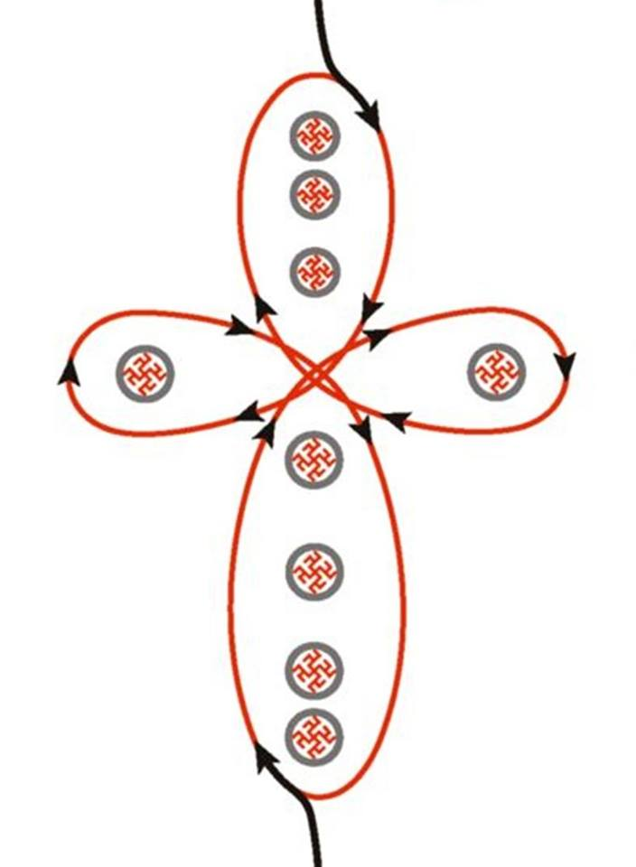

Woher kamen die Ahnen der Slawen und der Arier.
Heutzutage gibt es die Meinung, dass die gegenwärtige Geschichte der Slawen und Arier mit der Christianisierung von Russia anfängt.
Es ist so als ob vor diesem Ereignis keine Slawen und Arier existierten, ob wohl der Mensch sich bereits fortpflanzte, das Territorium bewohnte und eine Spur in Form vom Glaubenssystemen hinterlies. Der Schrift, der Sprache, der Richtlinien, welche die Wechselbeziehungen des Stammes regulieren,. die architektonischen Bauten, die Rituale, die Sagen und Legenden.
Aus der Hypothese der Zeitgeschichte ist die Schrift und die Grammatik aus Griechenland, das Recht — aus Rom, die Religion — aus Judäa zu den Slawen und Arienrn gekommen.
Das slawische Thema hebend, ist das erste, womit die Slawen das Heidentum verbinden, d.h. der Heide ist ein Vertreter des fremden unbekannten Glaubens.
Es ist seltsame zu denken, dass alles, was lange vor dem Christentum an Erfahrungen gesammelt und an die nachfolgenden Generationen übergeben wurde, Ketzerei und Irrtümer waren. So, das alle Menschen auf der Erde seit Jahrhunderten in der Illusion, den Selbstbetrug und die Selbsttäuschung lebten.
Die Forschung vieler Quellen des reichsten slawisch-arischen Erbes der Vorfahren besagt, dass die Slawen und Arier auf der Erde lange vor den Vertretern anderer Völker erschienen sind. Unsere Erde hatte den Namen Midgard, wo «mid» oder «middle» den mittleren, «gard» - die Stadt bedeutet, d.h. die mittlere Welt (erinnern Sie sich an die Schamanenvorstellung über den Bau des Universums, Babylonier, Sumerer: Heiliger Baum von Eridu, Germanen: Yggdrasil (Esche), daneben noch die Irminsul, Griechen: Baum der Hesperiden, Hebräer: Lebensbaum (Kabbala) (Etz Chaijm), Inder: Asvattha-Baum, Letten: Eiche, Maya: Wacah Chan (Weltenbaum) und Yax Cheel Cab (Erster Baum der Welt), Perser: Simurgh-Baum (Mutter aller Bäume)).
Vor ca. 460 500 Jahren zurück sind unsere Vorfahren auf dem Nordpol der Midgard-Erde gelandet. Von jener Periode hat unser Planet die bedeutenden Veränderungen, wie klimatisch, als auch geographisch ertragen.
Zu jenen fernen Zeiten war das Festland der Nordpol reich an Flora- und der Fauna, die Insel „Bujan“, auf der die dichte Vegetation wuchs, war von unseren Vorfahren bewohnt.
Das slawisch-arische Geschlecht (Stamm) bestand aus den Vertretern der vier Völker: Da`Arier, H`Arier, Rassenen und Swjatorussen (Heiligrussen).
Als ersten sind die Da`Arier auf die Midgard-Erde gekommen. Sie sind aus dem Sternsystem des Sternbildes Simun oder der Kleinen Bärin (Kleiner Wagen), der Erde Rai gekommen. Die Farbe ihrer Augen - grau, silbern - entsprach der Sonne ihres Systems, die den Namen Tara hatte (Abb.1).
Sie haben das Nordfestland, wo sie sich angesiedelt haben, die Darija genannt. Danach sind H`Arier gefolgt. Ihre Heimat - das Sternbild Orion, die Erde Tara, die grüne Sonne - Rada, die in der Farbe ihrer Augen eingeprägt wurde.
Später kamen die Swjatorussen - die blauäugigen Slawen aus dem Sternbild Makosch oder der Großen Bärin (Großen Wagen), die sich auch Swaga genant haben.
Und noch später sind braunäugige Rassen aus dem Sternbild der Rassa und der Erde Ingard, des Systems des Beta Löwen erschienen.
Wenn wir die Völkerschaften betrachten, die aus vier Großen slawisch-arischen Geschlechtern (Stämmen) hervor gegangen sind, so sind die von Da`Arier kamen die sibirischen Russitschi, die nordwestlichen Germanen, die Dänen, die Holländer, die Letten, die Litauer, die Esten usw.
Vom Geschlecht (Stamm) der H`Arier sind östliche und Meeres Russen, die Skandinavier, die Angelsachsen, die Normannen (oder Muromzy), die Gallier, Weiswasser Russitschi entstanden.
Abb. 1
Das Geschlecht (Stamm) der Swjatorussen - stellen die Nordrussen, die Weißrussen, die Waldwiesen, die Polen, die östlichen Prussen (Preußen), die Serben, die Kroaten, die Makedonier, die Skandinavier, die Iren, die Assen aus der Iriji, d.h. Assirij.
Und die Rassenen sind die Etrusker(das westliche russisches Volk oder wie die Griechen sie nannten - diese Russen), die Moldawier, die Italiener, die Franken, die Goten und die Albaner, u.a.
Die Urheimat unserer Vorfahren wurde die Hyperborea (griechisch „Yπερβορέα“ - „jenseits des Nördlichen“, Boreas war der Gott des Nordwinds oder russisch „Гиперборея“, ausgesprochen Giperboreja, „Borej - der Nordwind“ und „giper“ (hyper) – stark) oder Daarija (nach den ersten slawisch-arieschen Geschlecht Da`Arier, die Erde besiedelten) - das Nordfestland der Midgard-Erde (Abb. 2).
Abb. 2
Hier in Daaria war die Quelle des altertümlichen wedischen Wissens, dessen Körnchen jetzt auf der ganzen Erde unter den verschiedenen Völkern auseinandergeworfen sind.
Aber unsere Vorfahren mussten die Heimat für die Rettung der Midgard-Erde opfern. Zu jenen fernen Zeiten hatte die Erde 3 Satelliten (Begleiter): den Mond Lelja mit einem Zyklus von 7 Tagen, den Mond Fatta - mit 13 Tagen und den Mond Monat - mit 29,5 Tagen.
Die dunklen Kräfte aus der technogenen Galaxis der 10 000 Planeten (die Finsternis entspricht der Zahl 10 000), oder Peklo (Glut) Welt genannt, (d.h. die Erden dort sind noch nicht bis zum Ende entwickelt, sie werden noch „gebacken") haben für sich den Mond Lelja auserwählt, haben auf ihm die Kräfte entfaltet und haben einen Anschlag auf die Midgard-Erde gerichtet.
Unser AR AHN und Höchster Gott – Tarch hat die Erde gerettet, der Sohn von Gott Perun hat den Mond Lelja zerschlagen und die Basis des Dunklen Reiches zerstört. Von hier kommt der Brauch die Eier zu Ostern aufeinander zu schlagen, was den Sieg von Gott Tarch Perunowitsch über das Dunkle Reich - den Todesteufel symbolisiert, der den Tod im Ei fand (den Prototyp des Mondes).
Das Ereignis ist 111 818 Jahren vor unserer Zeit geschehen und dieses wurde zu einem neuen Punkt des Abzählens der Zeitrechnung von der Großen Übersiedlung. Das Wasser von Mond Lelja ist auf die Midgard-Erde geströmt und hat den Nordkontinent überschwemmt. Infolge dessen ist Daarija auf den Grund des Nord- Polar- Ozeans gesunken.
Das war der Grund der Großen Übersiedlung der slawisch-arischen Stämme aus Darija in Rassenija, auf die südlich liegenden Reste der Inseln der „Neue Erde“.
Die große Übersiedlung dauerte 16 Jahre. So wurde 16 eine heilige Zahl für die Slawen und Arier. Darauf basiert der slawische Swarog Kreis oder Tierkreiszeichen, es besteht aus den 16 himmlischen Sterneneinhäusern.
Die 16 Jahre – ist ein voller Kreis (Lebenskreis), der 144 Jahre zu je 16 Jahren umfasst, die durch die 9 Elemente (Welten) gehen, wo das letzte 16 Jahr für den Heiligen galt.
Allmählich haben unsere Vorfahren das Territorien besiedelt. Von den „Kletter Bergen“ (russisch „Рипей“, gelesen Ripey), die mit Kletterpflanzen überdeckt waren oder auch Uralberge („liegend bei der Sonne“) heissen. „U Ra“ - die Sonne, das Licht, den Glanz, den „L“ - die Loge bis zum Altai mit dem Fluss Lena, wo das All oder Universum, eine höchste Struktur ist und von hier aus kommt „all“ die Realität. Die Wiederholung, die Reflexion (die Spiegelung) vom All; „Al“ – das All (Universum) und „tai“- die Berge, der Gipfel heisst zusammen Altai. Sie sind die Berge, die in sich die reichsten Vorkommen in Minen bewahren und der Mittelpunkt der Energie sind – ein riesiger Kraftplatz. Und jener dehnt sich von Tibet bis zum Indischen Ozean im Süden (Iran) und später bis zum Südwesten nach Indie aus.
106 790 Jahre vor unserer Zeit haben unsere Vorfahren Asgard (die Stadt der Asse) auf der Mündung vom Fluss Iriji (heute Irtysch) und Om wieder aufgebaut. (heute steht dort die russische Stadt Omks. Der Berg Alatyr („Altar“ heute Belucha) – war ein Tempelkomplex von 1000 „Arschin“, (mehr als 700 m.) in der Höhe und aus vier Tempeln bestehend, diese hatten alle Pyramidenform und wurden übereinander errichtet.
Und so hatte die Heilige Rasse, das Geschlecht der Assen - der Götter, die auf der Erde leben, das ganze Territorium der Midgard-Erde besiedelt, sie hat sich fortgepflanzt und wurde zu einem Großen Stamm, der das Land der Assen – Assija (Assia) heute unter dem Namen - Asien gegründet hat. Sie bauten einen Aria Staat auf – die Große Tartarija.
Das Land nannten sie Belowodje (Weises Wasser) abgeleitet von der Bedeutung des Namens des Flusses Iriji, auf dem Asgard Iriji („Iriji“ - der Weiße, der Reine) aufgebaut war, d.h. nördlicher wahrhafter göttlicher Iriji.
Als der Stamm der Großen Rasse, später vom strengen daarischen Windgetrieben wurde, fingen sie an weiter nach Süden abzuwandern, um auf verschiedenen Festländern (Kontinenten) anzusiedeln. Der Fürst Skanda hat den Nordteil Weneja besiedelt.
Dieses Territorium wurde später als Skando(i)nav(i)ja (russisch „Скандо(и)навь(и)я“ und heute Skandinavien) bezeichnet. In der Überlieferung heiß es, als der Fürst im sterben lag, hat er folgendes gesagt, „ … dass seine Seele nach dem Tod diese Erde schützen wird.
Die Stämme der Wanen oder Vanen haben die Gebiete hinter dem Kaukasus besiedelt, später habe sie wegen der Dürre südlich von Skandinavien, auf das Territorium der modernen Niederlande umgesiedelt. Als Andenken an die Vorfahren haben die Bewohner der Niederlande die Vorsilbe „Van“ in den Familiennamen (Van Gogh, Van Beethoven u.ä.) behalten.
Die Stämme von Gott Weles oder Veles - die Bewohner Schottlands und Irlands haben zu Ehren der Urahnen und des Beschützers eine der Provinzen, Wales oder genannt. (Teil des Vereinigten Königreichs Großbritannien und Nordirland)
Die Stämme von Swjatorussen haben die östlichen und südlichen Teile der Weneija, sowie baltische Länder besiedelt.
Im östlichen Teil hat sich das Land Gardarika gebildet - das Land der Städte (Gardariki ist der nordische Name für Russland oder die Umgebung Novgorod) es bestand aus: Nowgorod und Pomorsk (Lettland und Preußen), Rote Russia (Polen, Ukraine, Litau, Lettland, Estland, Moldawien, Slowakei und teilweise die Hoheitsgebiete Russland), Weiße Russia (Weißrussland), Kleine Russia (Gebiet Kiew), Mittlere Russia (Gebiet Moskau und Wladimir), Karpaten Russia (die Ungaren und die Rumänen), Silberne Russia (die Serben).
Die Stämme von Gott Perun haben Persien und die H`Arier Arabien besiedelt.
Die Stämme von Gott Nija oder Neptun wurde auf dem Festland (Kontinent) Atlantis angesiedelt und wurden Atlanter genannt. Dort lebten sie zusammen mit der einheimischen Bevölkerung (Indianer) mit der Hautfarbe des Feuers.
Erinnern Sie sich selbst an die letzte Zivilisation der Inkas, als die Indianer (Mayaindianer) Konquistadoren für die Weißen Götter gehalten haben, oder ein anderer Fakt, Tatsache ist das der Beschützer der Indianer – Die fliegende Gefiederte Schlange Quetzalcoatl - als bärtiger und hellhäutiger Mann beschrieben wird.
Atlantis wurde im russischen Antlan (Антлань) ausgesprochen. Wie die Griechen berichteten wurde Atlantis zur mächtigen Zivilisation, wo die Menschen mit der Zeit anfingen ihr Wissen im eigenem Dienste zu missbrauchen. Infolge dessen haben sie die Naturgesetze verletzt. Sie haben den Mond Fatta auf die Erde herabstürzen lassen und haben selbst die Halbinsel überschwemmt.
Infolge der Katastrophe wurde der Swarog Kreis (Sternkreiszeichen) verschoben, die Achse der Erddrehung ist zur Seite gekippt und der Winter oder die slawische Göttin Marena fing an die Erde für ein Drittel des Jahres mit ihrem Schneemantel zu zudecken. Diese Ereignisse sind vor 13 020 Jahren vor unserer Zeit geschehen und wurden zu einen neuen Punkt des Abzählens der Zeitrechnung vom Großen Temperaturrückgang - Große Eiszeit.
Die Stämme der Atlanter haben sich im Land Ta Kem niedergelassen, wo sie mit den Menschen mit der Hautfarbe der Finsternis lebten und unterrichteten jene in ihrer Wissenschaft, dem Handwerk, der Agrakultur (Landwirtschaft) und dem Bauwerk von pyramidenförmigen Gruften. So entstand das Land Ägypten, das als das Land der Berge, die von Menschenhand geschaffen sind bezeichnet wurde.
Die vier ersten Dynastien der Pharaos waren Weiße, später fingen sie an, die Pharaos von der Auserwählten aus den einheimischen Völkern vorzubereiten.
Später ist der Krieg zwischen der Großen Rasse und dem Großen Drachen (den Chinesen) ausgebrochen, infolge dessen wurde ein Friedensvertrag im Sternentempel (dem Observatorium) zwischen Assur (der As - der Erdgott (ihm vertrautes, bewohntes Territorium) und Ariman (Arim, Ariman - der Mensch mit der etwas dunkleren Hautfarbe) unterschrieben.
Das gegebene Ereignis ist vor 7520 Jahre vor unserer Zeit geschehen und wurde zu einem neuen Punkt des Abzählens, der Zeitrechnung von der Erschaffung der Welt im Sterntempel.
Die Slawen und Arier hießen Assen - Götter die auf der Erde leben, die Kinder der himmlischen Götter - der Schöpfer. Sie waren niemals Sklaven, «der stummen Herde», die keine freie Wahl hat.
Die Slawen und Arier haben niemals gearbeitet. Die Wurzel des russischen Wortes für Arbeit – «работа» ist «раб» übersetzt heißt das Sklave. Schauen wir uns das Wort Arbeit an: (altslawisch: Sklaverei, germanisch: „Arbaiþis“, gotisch: „Arbaiþs“, althochdeutsch: „Arapeit“, mittelhochdeutsch: „Arebeit“ = Arbeit = Mühe, Beschwernis, Leiden, Mühsal).
Unsere Urvölker haben niemals mit Hilfe von Gewalt fremde Territorien ergriffen und doch wurden sie von den Griechen als Tyrannen bezeichnet, weil sie ihnen nicht gestattet haben, ihre Länder zu ergreifen. Die Slawen und Arier haben für das Wohl ihrer Stämme (Familienstämme) gewirkt und waren selbst die Eigentümer und Schöpfer der Ergebnisse ihrer Werke.
Die Slawen und Arier ehrten die heiligen Gesetze Rita - die Gesetze der Rasse und des Blutes und liessen gemischte Ehen nicht zu. ( Ehen mit Leuten nicht slawisch-arischer Herkunft) Dafür wurden die Russen oft als Rassisten bezeichnet, Aber auch hier muss man in die Wurzel schauen, um die tiefste Weisheit unserer Ahnen zu verstehen.
Die Erdkugel, gleich einem Magneten mit zwei entgegengesetzten Polen. Die weißen Völker besiedelten den Nordpol (positiven Pol) und schwarze Völker den Südpol (negativen Pol). Alle physischen und energetischen Systeme des Organismus waren entsprechend dem Wirken auf den gegebenen Poenl bestimmt.
Deshalb verliert be deri Ehen zwischen weiß und schwarz das Kind die Unterstützung (Verbindung) der Ahnen von beiden Eltern: +7 und -7 in der Summe ergeben die Null. Solche Kinder sind den Erkrankungen mehr unterworfen, da ihnen die vollwertig Immunität des Schutzes entzogen wird, sie werden oft Revolutionäre-Aggressoren, die gegen die Systeme protestieren, die sie nicht angenommen oder zurückgestoßen haben.
Auch findet gerade eine Massenverbreitung der indischen Lehren über die Chakren statt, laut der im Körper des Menschen entlang der der Wirbelsäule die wesentlichen 7 Chakren (Energiezentren) liegen. An diesem Punkt entsteht die Frage : warum tauscht die Energie im Bereich des Kopfes die Zeichen (+ / -) aus? Wenn die rechte Seite des Körpers die positive Ladung hat, so wird diese später in der rechten Kopfseite die negative Ladung bekommen.
Die Energie ist dem elektrischen Strom gleich, der in der Geraden fließt und nirgends gebrochen wird. Dieser kann dieser nicht einfach so das Zeichen (+) auf das entgegengesetzten (-) wechseln.
Unsere Vorfahren sagten, dass sich im Körper des Menschen 9 wesentlichen Chakren befindet: 7 sind entlang der Linie der Wirbelsäule, und 2 – die im Bereich der Achselhölen liegen, diese bilden das energetische Kreuz.
So wird die Strömung der Energie in der Mitte vom Kreuz gebrochen und das Zeichen (+) wird in den Entgegengesetzten (-) getauscht.
Auch Jesus Christus sagte, dass jeder ein Kreuz trägt, d.h. jeder hat das energetische Kreuz auf sich (Abb. 3).

Abb.3
Heute verspotten die Gelehrten die Vorstellungen unseren Vorfahren über den Bau des Universums, das die Form eines Diskus hat, der ruhend auf drei Elefanten liegt, die auf einer Schildkröte stehen und diese im grenzenlosen weltenweiten Ozean des Universums schwimmt. Das Bild scheint naiv und dumm zu sein, wenn die Sachen flach betrachtet werden.
Die Slawen und Arier wurden gerühmt für ihr bildliches (symbolisches) Denken. Hinter jedem Wort, hinter jedem Bildnis (Gestalt) und in jeder aret und Weise verbarg sich eine Reihe von Sinnen tieferen Bedeutungen. Der flache Diskus - die Erde stellte das flachen alltäglichen Denken und das duale Bewusstsein dar, JA oder NEIN (Abb. 4).

Abb.4
Die vorliegende Welt ruht auf drei Elefanten: der Erste steht für die Materie, die Grundlage des Westens, der Zweite für die Idee, der Grundlagen des Arabischen Ostens und der Dritte, für Transzendenz oder den Mystizismus, die Grundlage Indiens, Tibets, Nepals u.a
Die Schildkröte ist eine Quelle, des ursprünglichen Wissens, woher "die Elefanten" die Energie schöpfen. Jene Schildkröte ist der Norden für die übrigen Völker, der direkt zum ursprünglichen Wissen - dem Ozean angeschlossen ist.
Der Ozean symbolisiert das grenzenlose Wissen und die absolute Wahrheit (die Energie).
Ein einfaches, solares Symbol (Sonnensymbol) der Slawen und der Arier die Swastika, die von Hitler überall verwendet wurde, war für ihn Mittel zum zwek, das Hauptziel Hitlers – die weltweite Herrschaft zu erlangen.
Für diese Errungenschaft hat er die stärksten und führenden Waffen verwendet. Er nahm als Grundlage weder die ägyptischen Hieroglyphen, noch die jüdische oder arabische Kabbala Symbole (Zeichen), sondern die slawisch-arische Symbolik, sondern die Swastika. was dem Symbol den negativen Abdruck in der menschlichen Struktur auferlegt hat (Abb. 5).
Abb. 5
Also, was ist die Swastika - eine Darstellung des Kreuzes in der Bewegung, dies ist die harmonische Zahl – 4. Die Zahl 4 zeichnet in einem beliebigen Nachkommen der slawisch-arischen Völker im Körper, der ihm die Eltern verliehen haben, die Anwesenheit der Seele, die in diesen Körper von den Götter geschickt wurde, des Geistes - die Verbindung mit den Göttern und den Schutz der Ahnen und des Gewissens auf. Und das Gewissen ist das Maß aller Taten des Menschen und besiedelt diese.
Wir erinnerten uns an den festen zu Ehren des Gott Kupalo (dem Reinen) er, wenn die Menschen sich in den Flüssen wuschen (reinigen den Körper), sprangen über das Feuer (reinigten die Seele), gingen dannach über die glühenden Kohlen (reinigten den Geist). Weitere mit zusammenhängende Feste: Deutschland: Mittsommerfest, Schweden: Midsommar, Dänemark und Norwegen: Sankt Hans, Estland: Jaanipäev, Finnland: Juhannus, Lettland: Jāņi, Spanien: La noche de San Juan, Russland: Iwan-Kupala-Tag, bekannt.
Die Swastika zeichnete den Bau des Universums auf, das aus unserer Welt Jawi (Wirklichkeit) - die Welt der Menschen und der lebendigen Wesen besteht. Zwei Welten, Nawi (die Welten der Geister): dunklen Nawi und hellen Nawi, Welt Slawi, (Ruhme) - die Welt der Ahnen und die Welt Prawi (Lenke) – die Welt der Hohen Götter.
Oft sehen die Gelehrten und Wissenschaftler eine Art Unterentwicklung in unseren Vorfahren und in ihren schlawisch-arieschen Mehrgottheiten. Aber auch hier geben die oberflächlichen Urteile das Verständnis auf die Frage nicht preis.
Für die Slawen und Arier ist der höchste Schöpfer der Schöpfung (Gott) das Höchste unerforschbare Dasein (Wesen) - RA-M-CHA („Ra“ - das Licht oder den Glanz, „M“ - die Welt (russisch: Mir), „Cha“ - die positive Kraft (Energie)), die in der Neuen Realität erschienen ist, und mit Manifestation, diese Realität erleuchtete das Große Licht der Freude. Von diesem Licht der Freude wurden die verschieden Welten und die Universen, die Götter und die Ahnen (Vorfahren) und die direkten Nachkommen geboren, d.h. wir sind ihre Kinder.
Die Hymne - Ruhmeslied
Mächtiger RA-M-CHA, einheitlicher Schöpfer der Schöpfung, Dein Sein in allen Welten - Überbringer von Leben! Wir rühmen und dreiheiligen Dich, alle Ahgehörigen von klein bis groß, in unseren Tempeln und in den Heiligtümern, in unseren Städten und in den Siedlungen, in unseren heiligen Wäldern und in den Eichenwäldern, an den Ufern unserer heiligen Flüssen und Seen. Für den heiligen Ingling, der für uns das Licht der Liebe und der Freude trägt, und unsere Herzen und Gedanken erleuchtet. Und werde all unser Wirken für deinen Ruhm, Heute und für immer, von Kreis zu Kreis, so war’s, so ist’s, so bleibt’s!
Wenn Ramcha in der Neuen Realität erschienen ist, bedeutet dies es; das noch andere höhere Realitäten existieren, und darüber auch noch usw… Um alles erkennen und verstehen zu können, war für die Slawen und Arier von den Göttern und den Ahnen (Vorfahren) der Weg der Geistigen Wiedergeburt und der Vervollkommnung durch die Schaffung (Schöpfung), der Bewusstwerdung der verschiedenen Welten und der Unendlichkeiten, der Entwicklung bis zu dem Niveau der Götter bestimmt. Da die slawisch-arischen Götter - die selben Menschen - die Assen sind, die verschiedene Erdteile besiedelten,. sie wirkten für das Wohl des Geschlechtes (Stammes) und haben den Weg der Geistigen Vervollkommnung zurücklegt.
Die Gestalten der slawisch-arischen Götter waren und konnten nicht Photografisch sein, sie übergaben nicht die Hülle (Körper), sie kopierten nicht und gaben nur den Sinn der Göttlichen Wahrheit und die Göttliche Struktur weiter.
So verkörperte der Gott Perun mit dem gehobenen Schwert den Schutz der Stämme, Gott Swarog mit dem Schwert und der Spitze nach unten, bewahrte die Alte Weisheit. Der Gott ist deswegen ein Gott, weil es ihm möglich ist in der Offenbarten Welt die verschiedenen Erscheinungen anzunehmen aber sein Wesen und die Wahrheit blieben unverändert.
Es war so ein oberflächliches Verständnis, das den Slawen und Arier menschlichen Opferungen zu schrieb. Die Materialisten des Westens, die an den Körper gebunden sind, setzen die physische Hülle mit dem Menschen gleich und können nicht verstehen, dass die Menschen im Feuer nicht verbrannten und verwendeten das Feuer, wie das Mittel der Fortbewegung in andere Welten und Realitäten (erinnern Sie sich an die feurigen Wagen, Feuerross und Feuerrad).
So hat das slawisch-arische Wissen die reichste Geschichte und (die) Kultur, die Wurzeln jener Weisheit, die in der Tiefe der Jahrhunderte und Jahrtausende zurück liegen.
Wir, die direkten Nachkommen unserer slawisch-arischen Götter und Ahnen (Vorfahren), haben den inneren Schlüssel zum System des gegebenen Wissens, das wir öffnen können und somit öffnen wir den hellen Weg der Geistigen Entwicklung und der Vervollkommnung. Wir öffnen die Augen und die Herzen, wir beginnen zu sehen, zu wissen, zu verstehen, zu glauben, zu leben und zu leiten.
Die ganze Weisheit liegt im Inneren des Menschen und unsere Götter sind immer in der Nähe und bereit in jeder beliebigen Minute, uns beizustehen. Gleich den Eltern, die ihr Leben für ihre Kinder bereit sind herzugeben.
Oft verstehen es die Kinder nicht und suchen die Wahrheit in den fremden Häusern, in den fremden Ländern und in Übersee. Unsere göttlichen Eltern sind zu uns Kindern immer duldsam und gut, wendet euch an sie und sie werden immer helfen!